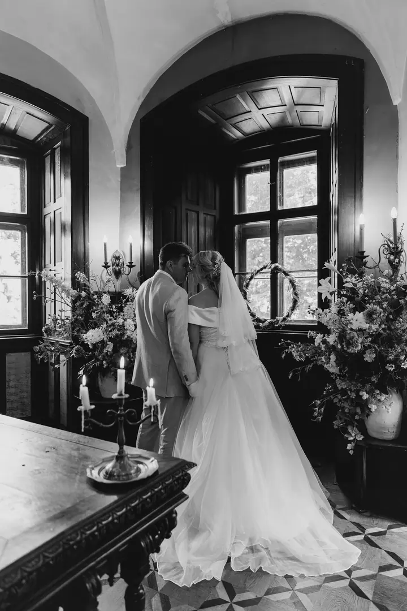
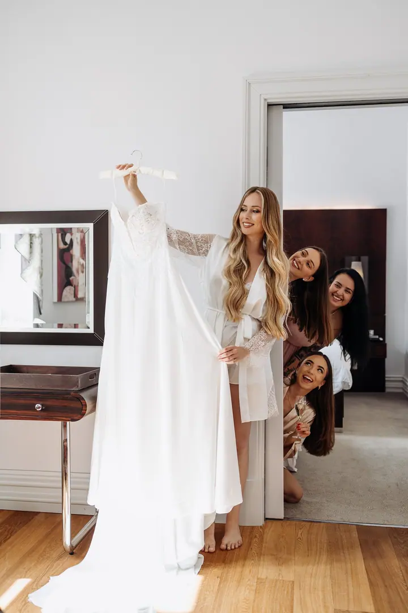
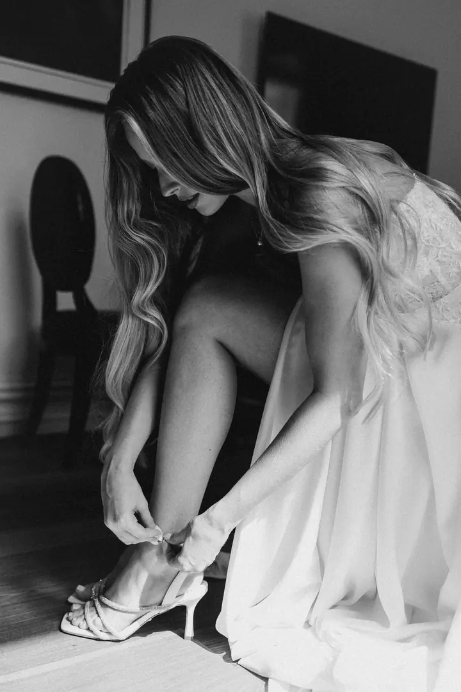
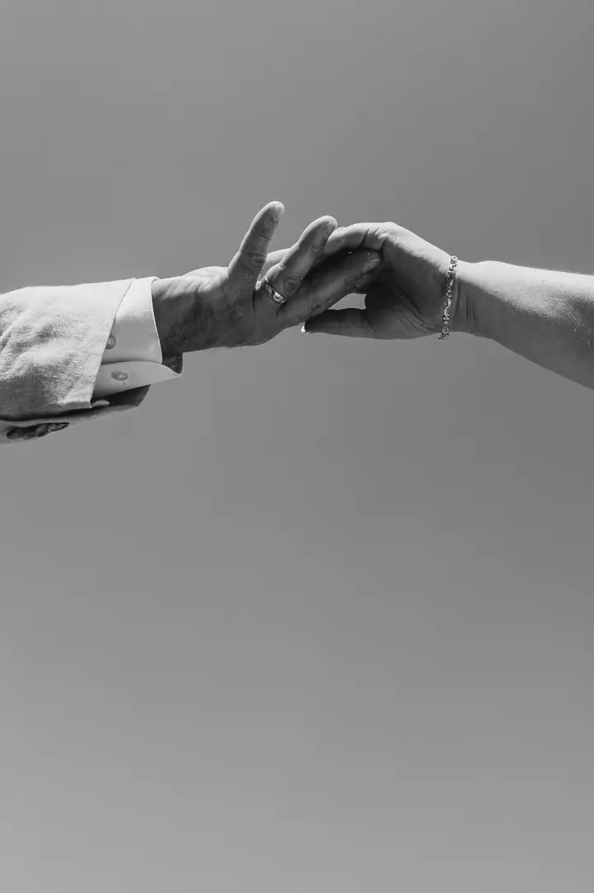
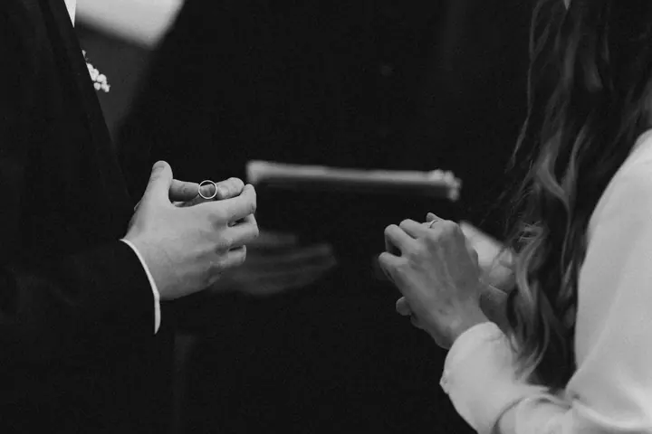
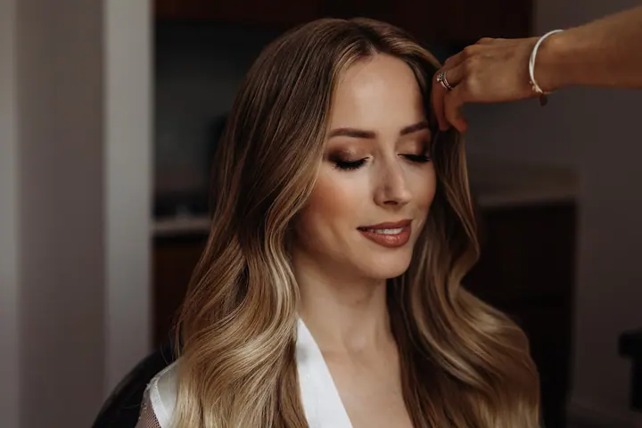

Svatby
Fotím svatby v Praze a na zámcích v okolí, od příprav nevěsty po hostinu. Kromě focení vám ráda pomůžu i s plánováním svatby.





Jmenuji se Tatyana, ale říkejte mi Táňa. Pocházím z Ukrajiny a dnes žiji v Praze, kde fotím svatby, páry, rodiny a portréty. Svou práci nazývám láskou skrze objektiv.
Více o mně
„Každá svatba je pro mě jeden příběh“
— Tatyana Khotlubiei
Fotím svatby v Praze a na zámcích v okolí, od příprav nevěsty po hostinu. Kromě focení vám ráda pomůžu i s plánováním svatby.
Párové focení před svatbou nebo jen tak, pro vás dva. Dostanete víc než 100 upravených fotografií.
Dvouhodinové portrétní focení v Praze a víc než 80 upravených fotografií.
Klidné focení pro rodiče s dítětem. Když potřebujete něco rychlého, nabízím i expresní focení s 50 upravenými fotkami.
Jsem fotografka z Ukrajiny a už nějakou dobu žiji v Praze. Fotím hlavně svatby, ale také lovestory, rodiny a portréty. Každé focení pro mě znamená jeden příběh, a proto ho tak i ukazuji ve svém portfoliu.
Svatby fotím v pražských hotelech, sálech i na zámcích v okolí. Zajímají mě tiché chvíle při přípravách, první pohled, ruce při výměně prstýnků i smích u stolu. Ráda pracuji s černobílou fotografií, ale stejně tak s přirozenými barvami.
Se svatbou vám můžu pomoct i jinak než s foťákem, protože se věnuji také plánování svateb. Všechny fotky ze svatby předávám barevně upravené a u portrétů pečlivě retušované.
Napište mi přes formulář nebo zavolejte. Řekněte mi, kdy a kde se svatba nebo focení koná a co si představujete.
Svatbu fotím na 3, 5 nebo 8 hodin, případně celý den. U ostatních focení si vyberete portrét, lovestory, rodinu nebo expresní focení.
Jsem u příprav, obřadu i oslavy a nechávám věci plynout. Spíš sleduji, než abych vás neustále aranžovala.
Dostanete všechny fotky barevně upravené, u portrétů s detailní retuší. Ke svatbě patří i 40 tištěných fotografií v dřevěné krabičce s USB flash diskem.
Tři hodiny stojí 450 eur, pět hodin 750 eur, osm hodin 950 eur a celý den 1200 eur.
Všechny zachycené fotky po barevných úpravách a s detailní retuší portrétů. K tomu 40 tištěných fotografií v dřevěné krabičce a USB flash disk.
Ano, v Praze nabízím expresní focení za 150 eur. Může to být portrét, pár nebo rodina 2+1 a dostanete 50 upravených fotografií.
Kromě focení se věnuji i plánování svateb v Praze. Napište mi, co potřebujete, a domluvíme se.